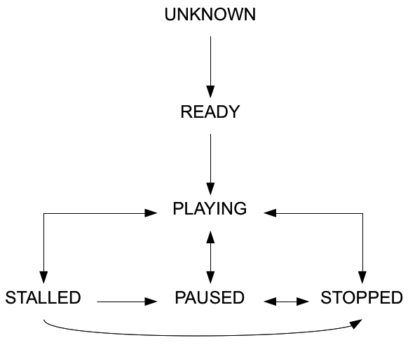

- All Implemented Interfaces:
Serializable,Comparable<MediaPlayer.Status>,Constable
- Enclosing class:
MediaPlayer
MediaPlayer.
The principal MediaPlayer status transitions are given in the
following table:
| Current \ Next | READY | PAUSED | PLAYING | STALLED | STOPPED | DISPOSED |
|---|---|---|---|---|---|---|
| UNKNOWN | pre-roll | dispose() | ||||
| READY | autoplay; play() | dispose() | ||||
| PAUSED | play() | stop() | dispose() | |||
| PLAYING | pause() | buffering data | stop() | dispose() | ||
| STALLED | pause() | data buffered | stop() | dispose() | ||
| STOPPED | pause() | play() | dispose() | |||
| HALTED | dispose() |
The table rows represent the current state of the player and the columns
the next state of the player. The cell at the intersection of a given row
and column lists the events which can cause a transition from the row
state to the column state. An empty cell represents an impossible transition.
The transitions to UNKNOWN and HALTED and from
DISPOSED status are intentionally not tabulated. UNKNOWN
is the initial status of the player before the media source is pre-rolled
and cannot be entered once exited. DISPOSED is a terminal status
entered after dispose() method is invoked and cannot be exited. HALTED
status entered when a critical error occurs and may be transitioned into
from any other status except DISPOSED.
The principal MediaPlayer status values and transitions are
depicted in the following diagram:

Reaching the end of the media (or the
stopTime if this is defined) while playing does not cause the
status to change from PLAYING. Therefore, for example, if
the media is played to its end and then a manual seek to an earlier
time within the media is performed, playing will continue from the
new media time.
- Since:
- JavaFX 2.0
-
Nested Class Summary
Nested classes/interfaces declared in class java.lang.Enum
Enum.EnumDesc<E extends Enum<E>> -
Enum Constant Summary
Enum ConstantsEnum ConstantDescriptionState of the player after dispose() method is invoked.State of the player when a critical error has occurred.State of the player when playback is paused.State of the player when it is currently playing.State of the player once it is prepared to play.State of the player when data coming into the buffer has slowed or stopped and the playback buffer does not have enough data to continue playing.State of the player when playback has stopped.State of the player immediately after creation. -
Method Summary
Modifier and TypeMethodDescriptionstatic MediaPlayer.StatusReturns the enum constant of this class with the specified name.static MediaPlayer.Status[]values()Returns an array containing the constants of this enum class, in the order they are declared.
-
Enum Constant Details
-
UNKNOWN
State of the player immediately after creation. While in this state, property values are not reliable and should not be considered. Additionally, commands sent to the player while in this state will be buffered until the media is fully loaded and ready to play. -
READY
State of the player once it is prepared to play. This state is entered only once when the movie is loaded and pre-rolled. -
PAUSED
State of the player when playback is paused. Requesting the player to play again will cause it to continue where it left off. -
PLAYING
State of the player when it is currently playing. -
STOPPED
State of the player when playback has stopped. Requesting the player to play again will cause it to start playback from the beginning. -
STALLED
State of the player when data coming into the buffer has slowed or stopped and the playback buffer does not have enough data to continue playing. Playback will continue automatically when enough data are buffered to resume playback. If paused or stopped in this state, then buffering will continue but playback will not resume automatically when sufficient data are buffered. -
HALTED
State of the player when a critical error has occurred. This state indicates playback can never continue again with this player. The player is no longer functional and a new player should be created. -
DISPOSED
State of the player after dispose() method is invoked. This state indicates player is disposed, all resources are free and player SHOULD NOT be used again.MediaandMediaViewobjects associated with disposed player can be reused.- Since:
- JavaFX 8.0
-
-
Method Details
-
values
Returns an array containing the constants of this enum class, in the order they are declared.- Returns:
- an array containing the constants of this enum class, in the order they are declared
-
valueOf
Returns the enum constant of this class with the specified name. The string must match exactly an identifier used to declare an enum constant in this class. (Extraneous whitespace characters are not permitted.)- Parameters:
name- the name of the enum constant to be returned.- Returns:
- the enum constant with the specified name
- Throws:
IllegalArgumentException- if this enum class has no constant with the specified nameNullPointerException- if the argument is null
-